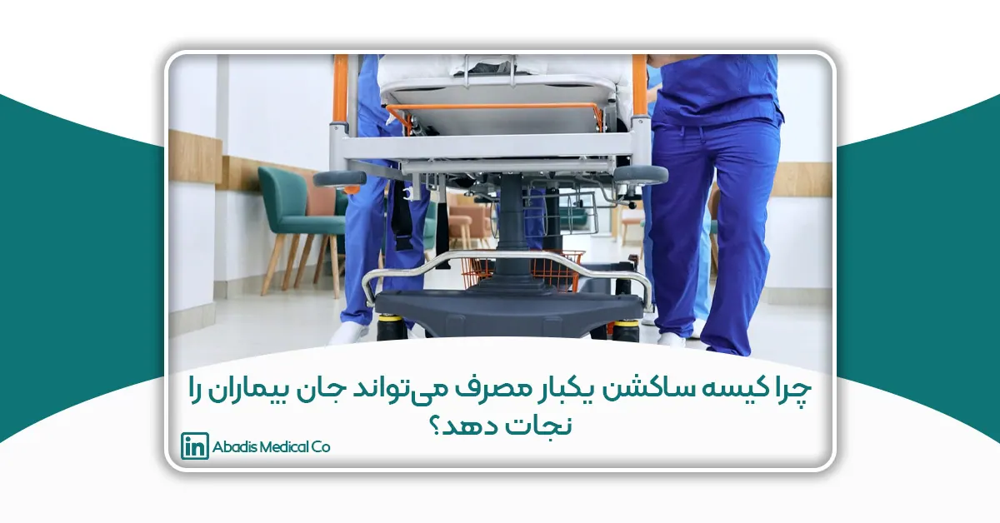

هدف
بررسی مقرون به صرفه بودن باتل ساکشن یکبار مصرف در بیمارستان امام حسن(ع) با استفاده از مقالات مروری
مقدمه
عفونتهای مرتبط با مراقبتهای بهداشتی باعث بروز مرگ و ناخوشی در بیماران، به ویژه در بخش مراقبت ویژه میشوند؛ روشها و دستورالعملهای مختلفی برای کنترل این عفونتها وجود دارد که بخشی از این دستورالعمل ها درباره ساکشن وتجهیزات آن است.
عفونت های مرتبط با مراقبت های بهداشتی (HAIs)علت اصلی مرگ و ناتوانی قابل پیشگیری در بین بیماران بستری در بیمارستان است. با توجه به مراکز کنترل و پیشگیری از بیماری(CDC)، عوارض یا عفونتهای ثانویه به کاشت دستگاه یا جراحی به عنوان HAI شناخته می شود. به طور خاص، CDCعفونت های محل جراحی، عفونت جریان خون، عفونت های دستگاه ادراری مرتبط با کاتتر و پنومونی های مرتبط با ونتیلاتور را نظارت می کند (بوئو و کیس، 2017.).
وجود لوله تراشه شانس VAP را افزایش می دهد، زیرا مکانیسم های دفاعی طبیعی مجاری هوایی بیماران را کاهش می دهد. به عنوان مثال،کاهش رفلکس سرفه به میکروارگانیسم ها اجازه می دهد تا به دستگاه تنفسی تحتانی دسترسی پیدا کنند. استنشاق مداوم قطرات کوچک اوروفارنکس (Subglottic) مکانیسم اصلی VAP است(واترز و همکاران، 2018).
پنومونی اولیه معموالً به دلیل میکرواسپیراسیون کلونی های باکتریایی نازوفارنکس رخ می دهد، اما ارتباط ضعیفی بین پنومونی دیررس و میکروآسپیراسیون وجود دارد. برای کاهش آسپیراسیون ترشحات، استفاده از کاف لوله تراشه در بیماران انتوبه شده و استفاده از ساکشن متناوب یا مداوم ترشحات اوروفارنکس پیشنهاد می شود.(پاگوتو و همکاران، 2008؛ دزفولیان و همکاران، 2005).
پنومونی بیمارستانی یک عارضه شایع در بیماران بستری در بخش مراقبت های ویژه (ICU) است. از ساکشن داخل تراشه در پاکسازی مجاری هوایی از ترشحات در بیماران تحت تهویه مکانیکی استفاده می شود. انجام دقیق ساکشن برای جلوگیری از پنومونی مرتبط با تهویه از اهمیت بالایی برخوردار است(علی پور و همکاران، 2016) و استفاده صحیح از این ابزار کمک بسزایی در کاهش عفونتهای تنفسی خواهد داشت.
طبق اخرین گزارش وزارت بهداشت از حدود ۹ میلیون و ششصدهزار بیمار بستری شده در بیمارستان، حدود128000نفر (0/75درصد) مبتلا به عفونت های مرتبط با مراقبت های بهداشتی بودند که 15.65 درصد از آنها فوت کردند، پنومونی مرتبط با ونتیلاتور شایع ترین عفونت مرتبط با دستگاه در هر 1000 روز ونتیالتور بود و باالترین میزان مرگ و میر(۴۳.08 درصد) را داشت(مسعودی فرو همکاران2022،). هر چند طبق نظر سازمان جهانی بهداشت امار عفونت بیمارستانی در ایران بین 10-8 درصد و در بخشهای ویژه بالای 25 درصد براورد شده است(کالنترزاده و همکاران، 201۴). عوامل متعددی در عفونت بیمارستانی دخالت دارند که یکی از این عوامل ساکشن می باشد (رودریگرز اسالس و همکاران ،2017 مصدق راد و همکاران، 2021).
در محیط بالینی مسایل مربوط به ساکشن به عنوان یکی از چالش های اساسی در مراقبت و کنترل عفونت بیمارستانی است و در این بررسی مقرون به صرفه بودن باتل ساکشن یک بار مصرف مورد بحث و بررسی قرار گرفته است.
در مرکز آموزشی، پژوهشی و درمانی امام حسن(ع) در سال 1۴0۳ از کل عفونتهای بیمارستانی شناسایی شده که معادل ۴07 عفونت بیمارستانی می باشد 182 مورد VAP و 1۳6 مورد پنومونی بود. یعنی ۳18 عفونت بیمارستانی شناسایی شده، عفونت تنفسی می باشد و از کل عفونتهای شناسایی شده، عفونتهای تنفسی 78 درصد عفونتها را به خود اختصاص داد.
روش بررسی
جستجوی مقالات از طریق پایگاه های داده ای شاملDirect Science ، PubMed، Cochrane، Medline، SID،Scopus، CINAHL، OVID، Doc Iranو Magiran با استفاده از کلید واژه های“ ساکشن یکبارمصرف ، عفونت بیمارستانی و مدیریت پسماند ” و معادل های انگلیسی آنها انجام شد. مقالاتی که در بازه زمانی 2000 تا 202۴ میالدی منتشر شده بودند و با محوریت اصلی موضوع تحقیق ارتباط بیشتری داشتند، انتخاب شدند و باتل ساکشن یکبار مصرف در پنج محور؛ پیشگیری و کنترل عفونتهای بیمارستانی، مدیریت مصرف آب، سهولت در کاربرد، مدیریت پسماند، و بار مالی مورد ارزیابی قرار گرفت.
یافته ها و بحث
باتل ساکشن یکبار مصرف در پنج محور کنترل و پیشگیری عفونت بیمارستانی، مدیریت مصرف آب، سهولت در کاربرد، مدیریت پسماند و بارمالی مورد ارزیابی قرار گرفت. در مطالعه ای که با هدف “ تاثیر بطری(باتل) ساکشن یکبار مصرف در ساکشن داخل تراشه عفونت -19COVID و قرار گرفتن در معرض پرستاران“ انجام شد نشان داد که استفاده از بطری های ساکشن یکبار مصرف در بیماران بستری باعث شده است کادر درمان کمتر در معرض بیماری کووید1۹- قرار گیرند و تعداد موارد ابتالی کادر درمان پس از استفاده از باتل های ساکشن یکبار مصرف کاهش یافته بود و نشان داده است که باتل ساکشن یکبار مصرف انتشار عفونت بسیار کمتر از باتل های شیشه ای دارد .(2022 ,Riaz and Hunjra)دستگاه ساکشن (Suction apparatus) و روش انجام ساکشن نقش اساسی در کاهش خطرات عفونت بیمارستانی دارد.
پیشگیری از عفونت در زمان انجام پروسیجر ساکشن؛ به تکنیک آسپتیک، شستن دست ها، دفع صحیح ترشحات انباشته شده در باتل ساکشن و ضدعفونی کردن دستگاه و باتل ساکشن متمرکز است .(1996 ,Smyth and Creamer)در مطالعه ای که از 122 نمونه سواب مرطوب از باتل قابل استفاده مجدد انجام شد نشان داد که 2۹.5 درصد پاتوژن مثبت گزارش شد. این بیانگر آن است که سطح حفاظت در صورت استفاده از محصولات یکبار مصرف بیشتر است و پیشنهاد داد مواد قابل استفاده مجدد باید با مواد یکبار مصرف جایگزین شوند تا بروز عفونت های بیمارستانی کاهش یابد که این موضوع اهمیت مواد و ابزار پزشکی یکبار مصرف در پیشگیری از عفونت های داخل بیمارستانی را نشان می دهد .طبق دستورالعملهای WHO نیز اعلام شده است که از ابزاری که در معرض ترشحات بیماران مبتلا به پنومونی قرار گرفتهاند، دوباره استفاده نکنید(دسامبر2020- (2021 ,WHO).
در یک کارآزمایی تصادفی کنترل شده در دو منطقه بیمارستان، برای جایگزینی بطری ساکشن یکبار مصرف و نظارت بر نتایج پذیرش و ترخیص در بخش مراقبتهای ویژه بررسی انجام شد و در مجموع استفاده از باتل یکبار مصرف را موثز در کنترل عفونتهای بیمارستانی پیشنهاد داد و تایید کرد در بخش مراقبتهای ویژه یکی از منابع عفونتهای بیمارستانی متقاطع با تغییر قطعات تجهیزات مانند بکارگیری باتل های ساکشن چند بار مصرف از یک بیمار به بیمار دیگر است.
مطالعه ی سوله و همکاران(2002) که با هدف “ رشد باکتری در ترشحات و تجهیزات ساکشن بیماران انتوبه شده از راه دهان“ انجام شد ، نشان داد که دستگاههای ساکشن با بسیاری از پاتوژن های مشابهی که در دهان وجود داشتند، بعد از مدتی کلونیزه شدند .تقریباً تمام (%۹۴) دستگاههای ساکشن لوزه در عرض 2۴ ساعت کلونیزه شدند .بیشتر پاتوژن های بالقوه باکتریهای گرم مثبت بودند. باکتری های گرم منفی و ارگانیسم های مقاوم به آنتی بیوتیک نیز در چندین نمونه وجود داشت؛ وجود پاتوژنها در نمونههای دهانی و خلط در اکثر بیماران این تصور را تایید می کند که میکرواسپیراسیون ترشحات رخ می دهد.
کلونیزاسیون یک عامل خطر برای پنومونی مرتبط با ونتیالتور است. تجهیزات مورد استفاده برای ساکشن دهان و داخل تراشه در عرض 2۴ ساعت با پاتوژن های بالقوه کلونیزه می شوند.(2002 .,al et Sole)در مطالعه ای نارونات و همکاران (2020) در تایلند که برای مقایسه تاثیر دو نوع ساکشن با دو روش تمیز و استریل انجام دادند، بیانگر آ ن بود که گروه تمیز دارای رشد باکتری مثبت 6۴.2 درصد و گروه استریل 57 درصد بود و این تفاوت از نظر آماری معنی دار نبود. میزان بروز آلودگی باکتریایی ناشی از ساکشن داخل تراشه با روش تمیز و استریل مشابه بود و گروه تمیز تمایل به آلودگی بیشتر از گروه استریل دارد که همه این موارد با استفاده از کیسه های ساکشن یکبار مصرف در جلوگیری از عفونتهای بیمارستانی قابل کنترل میباشد و کلونیزاسیون به صفر می رسد.
مدیریت مصرف آب یکی از محورهای استخراج شده در این مطالعه بوده است .کاهش مصرف آب و هزینه های ضدعفونی با استفاده از کیسه های یکبار مصرف ساکشن ایجاد می شود. برای وسایل چندبار مصرف باید اطمینان حاصل شود که این وسایل به خوبی تمیز، ضدعفونی، شستشو و آب کشی شده اند و قابل استفاده برای بیمار دیگری می باشند، که با استفاده از وسایل یک بار مصرف نیاز به مصرف آب کمتری می باشد. محتمل ترین توضیح برای افزایش مصرف آب، تقاضای آب اضافی مورد نیاز برای تمیز کردن محصوالت قابل استفاده مجدد است. این نتیجه به ویژه برای مناطقی که آب یک منبع کمیاب است و برای سناریو های آینده به عنوان کمبود آب، به ویژه در ماههای تابستان در سطح جهانی در حال افزایش است.
مدیریت پسماند محور دیگر قابل ارزیابی در این مطالعه بوده است. علاقه فزاینده ای به اثرات زیست محیطی مراقبت های بهداشتی وجود دارد .(2010 .,al et McGain 2008, .,al et Griffiths)ماتیس و همکاران(202۳) اظهار می دارد جایگزینی محصولات یکبار مصرف با محصولات قابل استفاده مجدد ممکن است اثرات زیست محیطی مراقبت های بهداشتی را کاهش دهد.
تغییر به محصولات بهداشتی قابل استفاده مجدد احتمالا بیشتر تأثیرات را بر محیط زیست به جز مصرف آب کاهش می دهد، اما اندازه تأثیر در بین دسته های محصول متفاوت است .(1999 .,al et Dettenkofer 2023, .,al et Keil) سهولت در استفاده از کیسههای ساکشن از مزیت های این محصول می باشد. چون بعد از استفاده این کیسه ها دور انداخته می شوند و برعکس کیسه هایچندبار مصرف که به نیروی انسانی، محلول ضدعفونی و… نیاز دارند، برای این کیسه ها این محدودیت ها برداشته شده است.
مدیریت بار مالی که یکی از چالش های امروزه بیمارستان هاست. با توجه به این که این باتل ها برای هر بیمار باید جداگانه مورد استفاده شود. در مطالعه ای که برای بررسی مقرون به صرفه بودن هزینه برای کنترل و پیشگیری عفونت بیمارستانی بر استفاده اختصاصی از ساکشن یکبار مصرف بعد از بررسی تمامی جوانب تاکید شد .(2001 ,Kollef).با توجه به این که این باتلها یک بار مصرف هستند نیازی به نیروی انسانی برای شستشو، ضدعفونی و ابکشی به ویژه در شرایط فعلی که کمبود نیروی انسانی در مراکز درمانی وجود دارد، نمی باشد .(2007 ,Muscarella).حذف زمان شست و شوی مخازن قدیمی بدلیل استفاده از کیسههای یکبار مصرف ساکشن هم ایجاد می شود.
نتیجه گیری
با توجه به یافته های این بررسی ها، اگر باتلهای ساکشن یکبار مصرف برای هر بیمار جداگانه خریداری و استفاده شود هزینههای محلول های ضدعفونی و استفاده نادرست از محلولهای ضدعفونی، مشکلات در رقیق سازی صحیح محلولها و احتمال صدمه جسمی کارکنان در استفاده از این محلولها و چالش های مدیریت پسماند فاضلابهای محلول های استفاده شده و تخلیه ساکشنها بر طرف می شود. باتل ساکشن یک بار مصرف نسبت به باتل ساکشن های چندبار مصرف الویت دارد زیرا جهت دفع نیاز به باز شدن و تخلیه محفظه ترشحات نبست. در بیمارستانهای ما با توجه کمبود نیروی انسانی برای ضدعفونی باتل ساکشن های چندبار مصرف، استفاده از باتل ساکشن یکبار مصرف الویت دارد و به تمام دلایل بالا استفاده از آن در مراکز درمانی مقرون به صرفه میباشد.
در مرکز آموزشی، پژوهشی و درمانی امام حسن(ع) محاسبه احتمالی میزان صرفه جویی به شرح ذیل است:
بر مبنای تعداد اعمال جراحی : در ماه : میانگین 500 عمل در سال : میانگین 6000 عمل
صرفه جویی در مصرف آب (لیتر): در ماه : 7 هزار و ۴۴0 لیتر در سال: 8۹ هزار و 280 لیتر
هزینه مربوط به شست و شو و ضد عفونی(تومان): در ماه: 81 میلیون و 250 هزار تومان در سال: ۹75 میلیون تومان
صرفه جویی در زمان کادر درمان (ساعت): در ماه: 221 ساعت در سال: 2 هزار و 655 ساعت
بر مبنای تعداد تخت عمل و تعداد تخت ICU با ضریب اشغال تخت 75 درصد:
تعداد تخت عمل: 7 تخت به علاوه یک تخت برونکوسکوپی: در کل 8 تخت
تعداد تخت آی سی یو : 35 تخت
صرفه جویی در مصرف آب (لیتر): 65,12۹ لیتر در سال (65 هزار و ا2۹ لیتر)
هزینه مربوط به شست و شو و ضد عفونی(تومان) در سال: 5۴۴,۳75,000 تومان در سال(پانصدو ۴۴ میلیون و ۳75 هزارتومان)
صرفه جویی در زمان کادر درمان (ساعت): 1,۹۳7 ساعت در سال (هزار و ۹۳7 ساعت)
تعداد باتل ساکشن یکبار مصرف مورد نیاز در روز در بخشهای ICU : حدود ۳۹ عدد
تعداد باتل ساکشن یکبار مصرف مورد نیاز در ماه : حدود 1170 عدد
تعداد باتل ساکشن مورد نیاز در سال: حدود 1۴0۴0 عدد
لازم به ذکر است در صورت تهیه باتل ساکشن یکبار مصرف شرکت مورد معامله، مخازن قرار دادن باتل یکبارمصرف را رایگان و با تعهد تعویض در صورت شکستگی، برای بیمارستان تامین می نماید.
منابع
منابع فارسی
رحمانیان وحید، شاکری حشمت اهلل، شاکری مسیح اله، رحمانیان کرامت اله، رحیمی معصومه/ اپیدمیولوژی عفونت های بیمارستانی در بیماران بستری در بیمارستان های شهر جهرم در سال .۱۳۹۵ مجله علوم پزشکی
پارس. .۱۳۹۶ ; ۱۵) :۱ (.۵۷-۶۶
مصدق راد علی محمد، افشاری مهناز، اصفهانی پروانه. شیوع عفونت های بیمارستانی در بیمارستان های ایران: مرور نظام مند و متا آنالیز. مجله اپیدمیولوژی ایران. ۱۳۹۹; ۱۶ )۴( .۳۶۲-۳۵۲.
منابع انگلیسی
Alipour N, Manouchehrian N, Sanatkar M, Anvari HMP, Jahromi MSS. Evaluation of the effect of open and closed tracheal suction on the incidence of ventilator associated pneumonia in patients admitted in the intensive care unit. Archives of Anesthesiology and Critical Care.2016; 2: 193-196.
Alkubati SA, Al-Sayaghi KM, Alrubaiee GG, Hamid MA, Saleh KA, Al-Qalah T, et al. (2022). Adherence of critical care nurses to endotracheal suctioning guidelines: a cross-sectional study. BMC nursing. 2022;21: 312.
Asfaw SH, Galway U, Hata T, Moyle J, Gordon IO. Surgery, anesthesia, and pathology: a practical primer on greening the delivery of surgical care. The Journal of Climate Change and Health. 2021; 4: 100076.
Boev C & Kiss E. Hospital-acquired infections: current trends and prevention. Critical Care Nursing Clinics. 2017; 29: 51-65.
CREAMER, E. & SMYTH, E. 1996. Suction apparatus and the suctioning procedure: reducing the infection risks. Journal of hospital infection, 34, 1-9.
DETTENKOFER, M., GRIESSHAMMER, R., SCHERRER, M. & DASCHNER, F. 1999. Life-cycle assessment of single-use versus reusable surgical drapes (cellulose/polyethylene-mixed cotton system). Der Chirurg; Zeitschrift fur alle Gebiete der operativen Medizen, 70, 485-91; discussion 491.
Dexter AM, Scott JB. (2019). Airway management and ventilator-associated events. Respiratory Care, 64, 986-993.
Dezfulian C, Shojania K, Collard H R, Kim H M, Matthay M A, Saint S. (2005). Subglottic secretion drainage for preventing ventilator-associated pneumonia: ameta-analysis. The American journal of medicine, 118, 11-18.
Duane B, Ashley P, Ramasubbu D, Fennell-Wells A, Maloney B, McKerlie T. 2022. A review of HTM 01-05 through an environmentally sustainable lens. British Dental Journal, 233, 343-350.
Griffiths J, Hill A, Spiby J, Stott R Ten practical actions for doctors to combat climate change. BMJ 2008.336; 150:1507.
Haghighat S, Yazdannik A. The practice of intensive care nurses using the closed suctioning system: An observational study. Iran J Nurs Midwifery Res. 2015;20(5):619-25.
Hosseini, M. B., Abdinia, B., Ahangarzadeh Rezaee, M., & Abdoli oskouie, S. (2014). The Study of Nosocomial Infections in Neonatal Intensive Care Unit, A prospective study in Northwest Iran. International Journal of Pediatrics, 2(3.2), 25-33.
eal suctioning COVID-19 infection and exposures of nurses. Journal of Shifa Tameer-e-Millat University, 5, 11-14.
Kalantarzadeh M, Mohammadnejad E, Ehsani S R, Tamizi Z. Knowledge and Practice of Nurses About the Control and Prevention of Nosocomial Infections in Emergency Departments. Arch Clin Infect Dis. 2014;9(4):e18278.
Kaye K, Marchaim D, Smialowicz C, Bentley L. 2010. Suction regulators: a potential vector for hospital-acquired pathogens. Infection Control & Hospital Epidemiology. 2010; 31: 772-774.
Keil M, Viere T, Helms K & Rogowski W. The impact of switching from single-use to reusable healthcare products: a transparency checklist and systematic review of life-cycle assessments. European Journal of Public Health. 2022; 33: 56-63.
Kollef, M.H. 2001. Is Prevention of Ventilator-Associated Pneumonia Cost Effective? Ventilator-Associated Pneumonia. Springer.
Maggiore SM, Lellouche F, Pignataro C, Girou E, Maitre B, Richard JC, Lemaire F, et al. 2013. Decreasing the adverse effects of endotracheal suctioning during mechanical ventilation by changing practice. Respiratory care. 2013; 58: 1588-1597
Masoudifar M, Gouya MM, Pezeshki Z, Eshrati B, Afhami S, Farzami MR, Seifi A. Health care-associated infections, including device-associated infections, and antimicrobial resistance in Iran: The national update for 2018. J Prev Med Hyg. 2022;62(4):E943-E949. d McGain F, McAlister S, McGavin A, Story D. The financial and environmental costs of reusable and single-use plastic anaesthetic drug trays. Anaesthesia and
intensive care. 2010;38: 538-544. Mohapatra S. Sterilization and Disinfection. Essentials of Neuroanesthesia. 2017:929–44.
Muscarella LF. 2007. Prevention of disease transmission during flexible laryngoscopy. American journal of infection control. 2007; 35: 536-544.
Narunart K, Wasinwong W, Siripruekpong S, Chantarokorn A, Kosem R (2020). Bacterial Con-tamination from Intraoperative Endotracheal Suctioning in Songklanagarind Hospital. Int J Respir Pulm Med, 7, 130.
Nobakht S, Shirdel A, Molavi‐Taleghani Y, Doustmohammadi MM, Sheikhbardsiri H.. 2018. Human resources for health: A narrative review of adequacy and distribution of clinical and nonclinical human resources in hospitals of Iran. The International journal of health planning and management, 33, 560-572.
Pagotto IM, Oliveira LRdC, Araújo FC, Carvalho NAAd, Chiavone P. 2008. Comparison between open and closed suction systems: a systematic review. Revista Brasileira de terapia intensiva, 20, 331-338.
Rodriguez-Acelas AL, de Abreu Almeida M, Engelman B, Canon-Montanez W. Risk factors for health care–associated infection in hospitalized adults: systematic review and metaanalysis. American Journal of Infection Control. 2017; 45: e149-56.
Sbutega-Milosevic G, Slepĕvić V, Marmut Z, Bujko M. 2000. Importance of disposable medical materials and instruments in the prevention of intrahospital infections. Vojnosanitetski Pregled, 57, 55-58.
Schalk R, Meininger D, Ruesseler M Oberndörfer D, Walcher F, Zacharowski K, et al. 2011. Emergency airway management in trauma patients using laryngeal tube suction. Prehospital Emergency Care, 15, 347-350.
Schwierzeck V, König JC, Kühn J, Mellmann A, Correa-Martínez CL, Omran H, et al 2021. First reported nosocomial outbreak of severe acute respiratory syndrome coronavirus 2 in a pediatric dialysis unit. Clinical Infectious Diseases, 72, 265-270.
Sole ML, Poalillo FE, Byers JF, Ludy JE. 2002. Bacterial growth in secretions and on suctioning equipment of orally intubated patients: a pilot study. American Journal of Critical Care, 11, 141-149.
Van de Leur JP, Zwaveling JH, Loef BG, Van der Schans CP. 2003. Endotracheal suctioning versus minimally invasive airway suctioning in intubated patients: a prospective randomised controlled trial. Intensive care medicine, 29, 426-432.
Waters C, Wiener RC, Motlagh HM. 2018. Ex vivo evaluation of secretion-clearing device in reducing airway resistance within endotracheal tubes. Critical Care Research and Practice, 2018.
Weinstein RA, Bonten MJ, Kollef MH, Hall JB. 2004. Risk factors for ventilator-associated pneumonia: from epidemiology to patient management. Clinical
Infectious Diseases, 38, 1141-1149.
WHO 2021. WHO Coronavirus (COVID-19) Dashboard: World Health Organization. WHO.
Yazdannik AR, Haghighat S, Saghaei M, Eghbali M. Comparing two levels of closed system suction pressure in ICU patients: Evaluating the relative safety of higher values of suction pressure. Iran J Nurs Midwifery Res. 2013;18(2):117-22